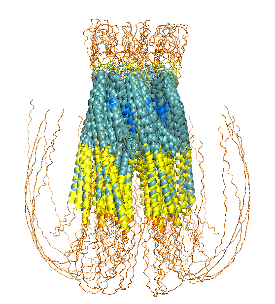

The sequence used to model ORAI1 is:
sp|Q96D31|ORAI1_HUMAN Calcium release-activated calcium channel protein 1 OS=Homo sapiens OX=9606 GN=ORAI1 PE=1 SV=2
MHPEPAPPPSRSSPELPPSGGSTTSGSRRSRRRSGDGEPPGAPPPPPSAVTYPDWIGQSYSEVMSLNEHSMQALSWRKLYLSRAKLKASSRTSALLSGFAMVAMVEVQLDADHDYPPGLLIAFSACTTVLVAVHLFALMISTCILPNIEAVSNVHNLNSVKESPHERMHRHIELAWAFSTVIGTLLFLAEVVLLCWVKFLPLKKQPGQPRPTSKPPASGAAANVSTSGITPGQAAAIASTTIMVPFGLIFIVFAVHFYRSLVSHKTDRQFQELNELAEFARLQDQLDHRGDHPLTPGSHYA
Deep Learning - AlphaFold3
To model the oligomeric structure of ORAI1, AlphaFold2 Multimer was initially considered. However, due to the hardware limitations, AlphaFold3 was used instead, enabling more efficient modeling of large multimeric assemblies. Although AF3’s black box nature limits control over intermediate steps, it offers faster processing, support for larger complexes, and improved refinement of inter-chain interactions, providing reliable structural insights under restricted computational resources.
Methods
The sequence was entered into the AlphaFold 3 server (copies: 6) to represent the hexameric assembly.
The structural consistency of the models generated by AF3 was evaluated by comparing the five independent ranked outputs, using a Root Mean Square Deviation (RMSD) threshold of < 1 Å to define high-confidence convergence.
A standardized PyMOL workflow was used to evaluate structural models. The five models generated by AlphaFold 3 were imported to superimposed onto Model1 the rest of the models (align). Local reliability was visualized with a pLDDT-based gradient: color orange, (b < 50) for low, color yellow, (b > 50) for medium, color lightteal, (b > 70) for high, and color marine, (b > 90) for very high confidence.
Results
The alignments of models 1 through 4 against the top-ranked model 0 (Figure 1) exhibited a high degree of structural similarity in their conserved cores, with a mean refined RMSD of 0.75 Å (ranging from 0.69 Å to 0.80 Å). Out of the 13,812 total atoms in each model, an average of approximately 9,160 atoms were used for the final calculation.

The predicted models and the results extracted from the output files are summarized in Table 1.
| Parameter | Value | Description |
|---|---|---|
| Ranking Score | 0.81 | Overall confidence score of the model |
| ipTM | 0.65 | Interface predicted TM-score |
| pTM | 0.66 | Predicted TM-score for the global topology |
| Fraction Disordered | 0.32 | Fraction of residues predicted as disordered |
| Has Clash | 0.0 | Number of steric clashes detected |
| Recycles | 10.0 | Number of internal refinement cycles used |
Discussion
In Figure 1, blue regions (high confidence) correspond to the four transmembrane helices of each subunit, confirming the channel pore architecture. Cyan to yellow areas indicate good confidence in the connecting loops. In contrast, the cytoplasmic N- and C-terminal tails appear in orange, reflecting high flexibility and structural uncertainty consistent with intrinsically disordered regions.
Regarding the results (Table 1), the ranking score of 0.81 indicates high confidence in the overall hexamer architecture. The ipTM value of 0.65 suggests generally consistent interactions between the six chains, supporting a coherent central pore, while the pTM score of 0.66 confirms reliable global folding. About 32% of residues are predicted to be disordered, consistent with the flexible cytoplasmic N- and C-terminal regions of human ORAI1.
Homology based - Swiss-Model
Swiss-Model was chosen as a second modeling approach to apply a classical homology-based methodology using high-resolution experimental templates. This platform allows the prediction to be anchored on known structures of orthologous proteins, which is essential to validate the overall architecture of the channel and the geometry of the pore.
This approach is considered the gold standard when high-resolution experimental templates (Cryo-EM or X-ray crystallography) are available, like for ORAI1.
Methods
For SWISS-MODEL, only the protein sequence was submitted once, as the server automatically handles oligomeric assemblies through the selected templates. During the “Search for Templates” step, high-resolution experimental structures were examined as potential references for homology modeling.
Templates with the highest sequence identity were prioritized. The top hit (Q96D31.1.A) corresponds to an existing AlphaFold model, but it was not selected because it represents only a monomer. Instead, an experimental structure determined by X-ray crystallography (4HKS.1.A) was chosen. This structure has a resolution of 3.4 Å, corresponds to a homohexamer, and includes calcium ions, making it particularly relevant for structural comparision.
Results
The homology model generated using SWISS-MODEL (Figure 2) was based on the crystal structure of the Orai protein from Drosophila melanogaster (PDB ID: 4HKS), which shares 62.43% sequence identity with the human protein.
The results of the model, including the quality metrics, are summarized in Table 2.

| Parameter | Value | Description |
|---|---|---|
| Template | 4HKS.1.A | X-ray crystallography structure of Drosophila (3.35 Å) |
| Oligomeric State | Homo-hexamer | Biologically functional assembly of the channel |
| Sequence Identity | 62.43% | Sequence identity with human ORAI1 |
| GMQE | 0.37 | Global Model Quality Estimation |
| QMEANDisCo Global | 0.59 ± 0.05 | QMEANDisCo score for overall structural quality |
Additionally, the QMEANDisCo Local Score can also be analyzed (Figure 3) to assess the per-residue confidence across the ORAI1 structure.

Discussion
Although the GMQE and QMEANDisCo scores (Table 2) are moderate, they reflect the structural features of human ORAI1. The template mainly covers the transmembrane domains and excludes the N- and C-terminal regions. High sequence identity in the channel core (62.43%) supports accurate pore modeling, while lower global scores are typical for membrane proteins with long disordered cytoplasmic segments.
Additionaly, focusing on the per-residue confidence (Figure 3), four distinct peaks of high confidence (values between 0.6 and 0.8) are clearly visible (the four transmembrane helices). In contrast, the pronounced drops in confidence coincide with extracellular and intracellular loop regions.
Overall, this pattern confirms that the structural core of the protein is predicted with relatively high reliability, whereas the flexible terminal and loop regions reduce the global quality score.
Protein language based model - ESMFold
ESMFold predicts the three-dimensional structure of proteins directly from their amino acid sequence using a protein language model. Unlike many other structure prediction methods, it relies on internal representations generated by a transformer-based architecture to infer interatomic distances and torsion angles, without requiring a search for evolutionary sequence alignments (MSA). As a result, the computational cost is significantly reduced.
This approach can be particularly advantageous for proteins such as ORAI1, whose flexible terminal regions and membrane-associated segments may be difficult to model using traditional homology-based methods, as language-model-based predictions can better capture structural patterns directly from sequence information.
Methods
Due to the memory limitations (900 residue limit), a reduced oligomeric model was generated in ESMFold. The sequence was analysed using three copies (copies: 3) and three recycling cycles (num_recycles: 3), which improves the refinement of inter-chain contacts while keeping the computational cost manageable.
To visualize the predicted models, the hexameric assembly was manually reconstructed by duplicating the predicted trimer and positioning it to form the full complex.
Results
ESMFold provides a confidence plot (Figure 4) composed of three complementary panels that allow evaluation of both the structural reliability and the predicted inter-chain interactions.

The predicted model by ESMFold is shown in Figure 5.


Discussion
First, in the confidence plot (Figure 4) is shown that the pLDDT profile has three similar patterns, corresponding to the three copies of the sequence. Each pattern displays four prominent peaks of high confidence (the four transmembrane helices of each subunit). Second, the Predicted Aligned Error (PAE) matrix shows a clear diagonal, reflecting high confidence in the internal structure. In addition, off-diagonal blocks reveal stable contacts between helices belonging to different subunits. Finally, the contact map further supports these interactions by highlighting recurrent contacts between the transmembrane helices, again suggesting a stable packing of the helices within the trimeric assembly.
In adittion, the manual reconstruction of the hexamer (Figure 5 (b)) shows a symmetric central pore characteristic of the ORAI1 channel.
This suggests that, despite the sequence length limitations of the ESMFold server, the structural information captured by the language model is sufficient to predict the key interfaces required for assembly of the functional channel. However, the N- and C-terminal regions remain unresolved, and their structure cannot be reliably inferred from the model.